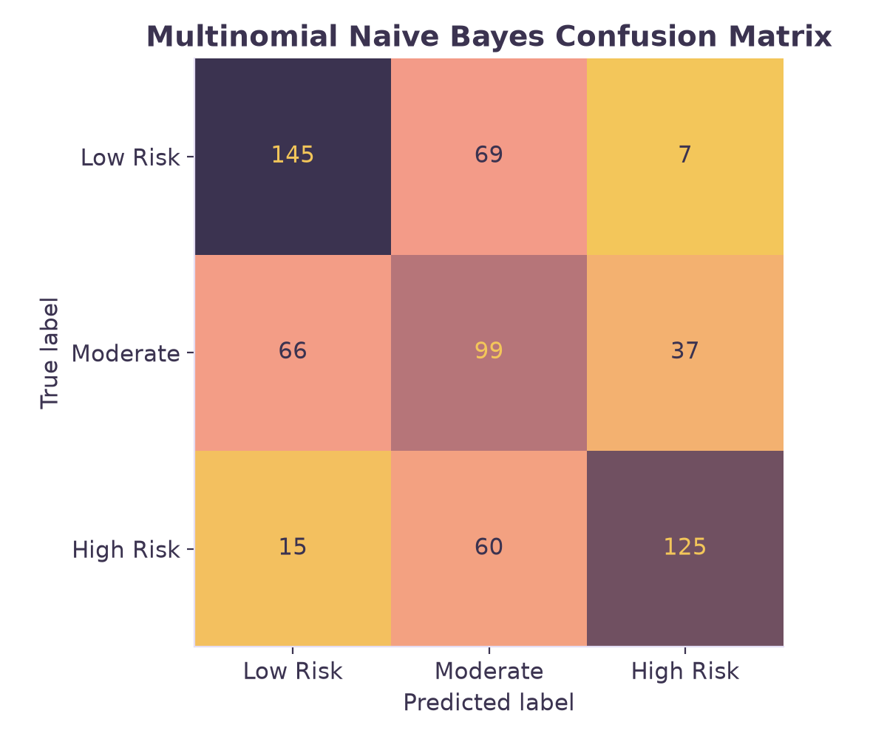

Overview
Naïve Bayes is a probabilistic supervised learning algorithm that is baded on Bayes Theorem. Bayes Theorem calculates the posterior probability byt multipling the prior probability by the likelihood. The algorth is considered "naïve" because it assumed every feature operated completely independently of all other features within a given class. This conditional independence is usually untrue in the real world, it simplifies the mathematical computation. There are three main variations of this algorith, Bernoulli, Gaussian, and Multinomial. Bernoulli Naïve Bayes is used for binary featyres containing only 0s and 1s. Gaussian Naïve Bayes is used for continuous numeric variables, assuming features follow a normal bell-curve. Multinomial Naïve Bates is generally used on discrete counts or relative frequencies. Naïve Bayes was specifically used on this data to calulcate the probability that a county falls into a specific infant health risk teir based strictly on its structural community conditions.

Data
Prepared dataset: clean_labeled_infant_risk.csv, clean_labeled_community_type.csv. Training set: nb_train.csv. Testing set: nb_test.csv. Raw data: raw_data folder.
Because Naïve Bayes is a supervised learning model, the algorithm requires labeled data. The variable of continuous low birth weight outcome was binned into three distinct categories labeled "Low Risk", "Moderate Risk", and "High Risk." The dataset was then split into two partitions, a taining set containing 75% of the data to build the model, and a testing set containing 25% of the data to calculate its accuracy. It is very important these these towo sets are disjoint. The final model must be tested on unseen data to prevent data leakage and ensure the accuracy score reflects the true predictic power.

images/nb_data_split.png.
images/nb_train_sample.png.
images/nb_test_sample.png.Code
View the code here: naive_bayes.py
Python was used to conduct the Naïve Bayes analysis. Primary packages used include pandas and scikit-learn packages. An important note is that scikit-learn requires the input data to be strictly numeric while some languages can perform Naïve Bayes on mixed data types.
Results
Predicting the most common risk tier as a baseline yields an accuracy of 35.47%. The Gaussian Naïve Bayes model improved this prediction to 53.13%. However, socioeconomic distress metrics are heavily right-skewed, which violates the normal distribution assumption of Gaussian models. To further evaluate Naïve Bayes, the 35 continuous vairables were standardized using MinMax scaling, compressing them into propotional indices, valued between 0 and 1. Multinomial Naïve Bates model was then applied and the scaled values were treated as relative frequencies of distress. Using Mulitnomial Naïve Bayes bypasses the strict normal distribution condition. This model had a predictive accuracy of 59.23%. The confusion matrices show that misclassifications tend to primarily occur between adjecent categories. This reflects the continuous gradient of community health outcomes.

images/nb_confusion_matrix.png.

images/nb_confusion_matrix_2.png.Conclusions
These results show that structural community conditions can predcit infant health risks using probability. Predicting risk tiers strictly from housing, economic, and demographic data reinforces the impact of the Social Determinants od Health. Comparing the two confusion matrices reveals an insight that although both the Gaussian and Mulitnomal models successfully identify the extreme ends of the risk spectrum, they both experiences overlap between adjacent risk categories. This reflects the continuous nature of community health. The 6% accuracy gap between the models further shows a algorithmic limitation. Because socioeconmo features are heavily right-skewed and highly correlated, models that rely on normal distributions or naïve conditional-independence assumption are prone to overconfidence and double-counting. Scaling teh data and treating them as relative frequencies therefore bypasses this and gives a more robust predictic basline for this data.